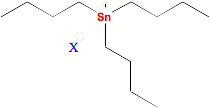
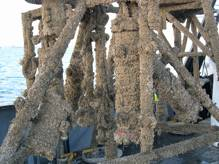

| METALS IN MEDICINE AND THE ENVIRONMENT | |||
| Metals | Tributyltin - The End of an Era | ||
|
Commercial antifouling paints are used to prevent the buildup of organisms on underwater surfaces. The accumulation of bio-matter can result in added weight and hydrodynamic drag to seagoing vessels and cause accelerated corrosion of underwater structural components. Commercially used antifouling paints contain high levels of tin or copper. The most effective antifouling agent is tributyltin (TBT), which is usually applied in the form of TBT oxide or TBT methacrylate. Regulations passed by the International Maritime Organization in 2001 declared no TBT paints could be applied after Jan 1, 2003 and no remaining underwater surfaces could contain any trace of TBT after Jan 1, 2008.(1) There is now an urgent need for replacement materials cabable of equal or better antifouling performance. TBT-containing paints work through simple diffusion of the organometallic complex out of the paint matrix or through ablation of paint layers. Once in open water, TBT is converted to a salt form with a chloride, hydroxide or carbonate counter ion. Its presence has been found hundreds of miles off shore, while it is found in highest in concentration around harbors. Depending on light availability, pH and oxygen concentration, it can take a year or more to degrade to less toxic dibutyltin or monobutyltin forms.(2)  TBT can be fatal to marine organisms even at low concentrations. The LC50 values of TBT oxide for rainbow trout were found to be only 7.1 μg/L.3 The Pacific oyster showed very different responses to TBT depending on its stage of growth. This illustrates the long accepted fact that TBT is more fatal to most species in their developing stages. The larval stage of this oyster showed an LC50 value of 1.557 μg/L, while the adult showed an LC50 value of 282.2 μg/L.(4) Copepods and mysid shrimp seem to be the most vulnerable with LC50 values close to or less than 1 μg/L for many species.(2,6) TBT can produce strange effects such as widespread changes in the sex of gastropods and impotence in as small as ng/L concentrations.(5,7) It has also been shown to seriously damage the immune response of flatfish living on the seabed where high levels of TBT are used. Finally, TBT is known to accumulate in the food chain, appearing in various species of whales, dolphins and seals.(1)  It is clear that more environmentally friendly antifouling coatings must be found. The phasing out of TBT usage will cause serious problems such as the need for more frequent coating of less efficient paints. An economic burden can be expected because slower ships will cause more fossil fuels to be used for transportation. Additionally, marine species clinging to ship hulls can be introduced into non-native environments world-wide if proper care is not taken for their removal. Currently, the most widely used alternatives are coatings containing even higher concentrations of copper (I) and copper (II) oxides than previous paints containing TBT. Although copper oxides seem to be less toxic than TBT, much research is being done into finding totally non-toxic systems to prevent biological growth. Nonstick coatings such as fluoropolymers are being investigated for their ability to prevent larval organisms from clinging to underwater surfaces, based on the same principle as a Teflon frying pan.(1) The chemical capsaicin, which is found naturally in red peppers, has been demonstrated to reduce fouling when mixed with non-metal-containing marine paints.8 Finally, even more exotic alternatives are being pursued such as trying to synthetically mimic the surface features of shark skin which is known to prevent barnacle buildup.(9) Resources International Maritime Organization References (1) International Maritime Organization Website (http://www.imo.org (2) Environmental Protection Agency’s Ambient Aquatic Life Water Quality Criteria for TBT (2003). (3) Hall, L. W. H. Marine Pollution Bulletin 19, 431-438 (1988). (4) Martin, R. C., Dixon, R. J., Maguire, R. J., Hodson, P. J., Tkacz, R. J. Aquatic Toxicology 15, 37-52 (1989). (5) Thain, J. E. Int. Counc. Explor. Sea, Mariculture Committee E:13 (1983). (6) Sidharthan, M., Young, K. S., Woul, L. H., Soon, P. K., Shin, H. W. Marine Pollution Bulletin 45, 177-180 (2002). (7) Hall, L. W. H. Marine Pollution Bulletin 19, 431-438 (1988). (8) Bryan, G. W., Gibbs, P. E., Burt, G. R., Hummerstone, L. G. Journal of Marine Biology 66, 611-640 (1986). (9) Irrigation Training and Research Center Evaluation of Antifouling Paints (http://www.itrc.org/reports/paints/paints.pdf) (10) National Geographic News Online (2005) (http://news.nationalgeographic.com /news/2005/07/0722_050722_sharkskin.html). (11) Image taken from: (www.woodshole.er.usgs.gov). (12) Image taken from: (http://www.ortepa.org/pages/antifoulants.htm). Author: Tyler St. Clair |
|||
| Topics | |||
|
|||